Cómo modificar un servo futaba para leer la posición
En esta guía se explicará como modificar un servo futaba para poder obtener la señal del potenciómetro que indica la posición del servo.
Esto nos permitirá desarrollar controladores de nivel superior en robots para que sean capaces de tomar decisiones en función de la posición real del servo. Por ejemplo, los robots modulares de tipo serpiente pueden usar estos servos modificados para generar patrones de movimiento que se adapten automáticamente al entorno.
Preparativos previos

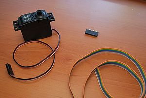
Materiales
- Servo futaba
- Cable plano
- Tira de pines hembra
Herramientas
- Soldador
- Objeto cortante (cúter, tijeras, etc)
- Taladro o similar
- Destornillador
Paso a paso
Preparar el cable
Coger el cable plano y separar tres hilos. Esto se puede hacer a mano o cortando con cuidado con un cúter o similar.
A continuación se pelan ambos extremos del cable, y se le aplica a cada punta una pequeña capa de estaño. De esta forma, cuando vayamos a soldarlo al servo y al conector nos será más sencillo.
Para fabricar el conector, hay que cortar la tira de pines hembra de forma que tengamos tres agujeros para las conexiones.
| 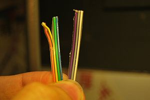 (click para ampliar) |
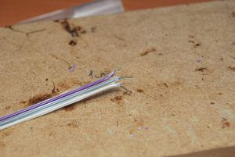 (click para ampliar) |
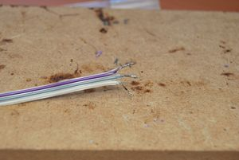 (click para ampliar) |


Abrir el servo
Quitar los cuatro tornillos de la parte inferior. Hay que tener cuidado con que la tapa de arriba no se caiga al hacerlo. La parte superior es la que contiene los engranajes, y esa parte no la vamos a modificar.
Una vez dentro identificaremos en la placa del servo las conexiones de alimentación y señal (las que vienen del cable) y las conexiones del potenciómentro.
| 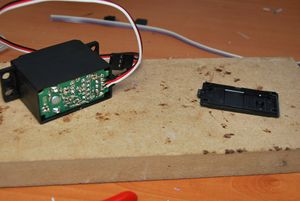 (click para ampliar) |
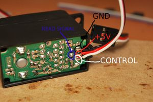 (click para ampliar) |


Modificar el servo
Procederemos a soldar el cable al servo. Soldaremos en este orden: tierra, positivo y señal.
- La tierra irá soldada en el mismo sitio que el cable negro.
- El positivo irá soldado en el mismo sitio que el cable rojo.
- La señal irá soldada en el terminal central del potenciómetro.
¡Atención! No conviene que el soldador caliente demasiado la placa, pues se puede dañar, por lo que la soldadura ha de efectuarse rápidamente y sin aplicar demasidado calor.
Una vez soldados, se llevará a cabo un agujero en la tapa, por dónde se extraerá, con sumo cuidado, el cable que hemos añadido.
| 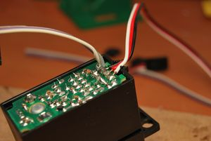 (click para ampliar) |
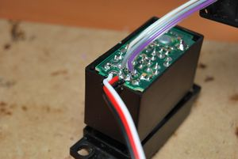 (click para ampliar) |
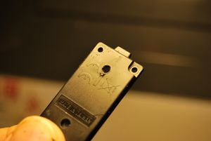 (click para ampliar) |
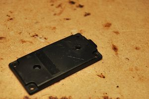 (click para ampliar) |


Cerrar y terminar el cable
Colocaremos la tapa del servo en su posición original y le pondremos los tornillos.
Una vez cerrado, soldaremos el otro extremo del cable al conector que hemos fabricado previamente, y lo aislamos con cinta aislante o tubo termorretráctil.
| 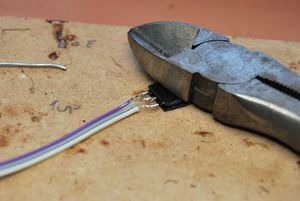 (click para ampliar) |
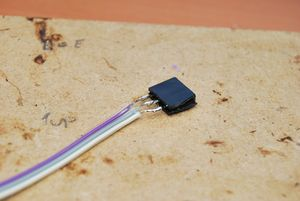 (click para ampliar) |
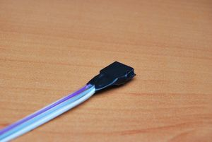 (click para ampliar) |


Resultado Final
El servo modificado debería quedar más o menos así:

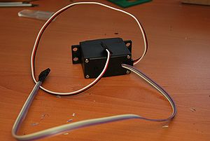
Software
Esta librería para Arduino trata al servo modificado como una sola entidad, pudiendo enviar al objeto una posición, o leerla.
| Hacked_servo.zip | Incluir en el programa la librería Servo.h para que funcione. Descomprimir en: sketchbook/ |
Autor
- David Estévez Fernández
Licencia
| |
| |
Repositorio SVN
- []
Enlaces
Noticias
- 29/Octubre/2010: David Estévez Fernández. Versión inicial de la página